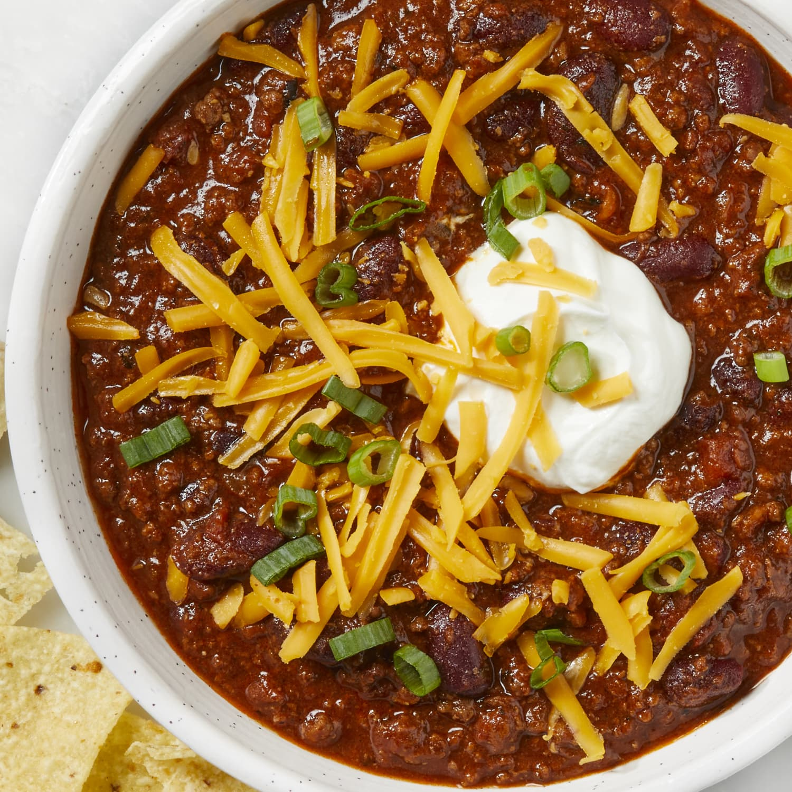

Home
Chipotle Chili

Description
Chili has been a staple of Texas cuisine since the days when cowboys drove herds of cattle across the country. As the state food of Texas, it has become a symbol of sorts for comfort food in the Lone Star State
My own version of Chipotle Chili includes a blend of 5 different peppers and can be made with or without beans, depending on your personal preferences.
Ingredients
- 2 lbs ground beef
- Cumin
- Chili powder
- Onion powder
- Garlic powder
- 1 can dark red kidney beans (optional)
- 1 can light red kidney beans (optional)
- 1 can great northern beans (optional)
- 32 oz tomato sauce
- 8 oz tomato paste
- 5 habanero peppers
- 5 jalapeno peppers
- 5 serrano peppers
- 2 anaheim peppers
- 1 small can chipotle peppers in adobo sauce
- Salt and pepper
- Shredded cheddar cheese (for topping)
- Sour cream (for topping)
Steps
- Brown ground beef in a skillet over med-high heat, generously seasoning with cumin and chili powder, plus some garlic powder and onion powder to taste.
- Dice all fresh peppers.
- Add cooked meat, diced peppers, beans (if desired), tomato sauce and paste, and chipotle peppers to crock pot on low heat and mix thoroughly.
- Sprinkle on hefty portions of chili powder and cumin, plus some onion powder, garlic powder, salt, and pepper to taste.
- Cook let cook at least 4 hours (overnight for best flavor). Scoop chili into bowls, and top with cheddar cheese and sour cream (if desired).